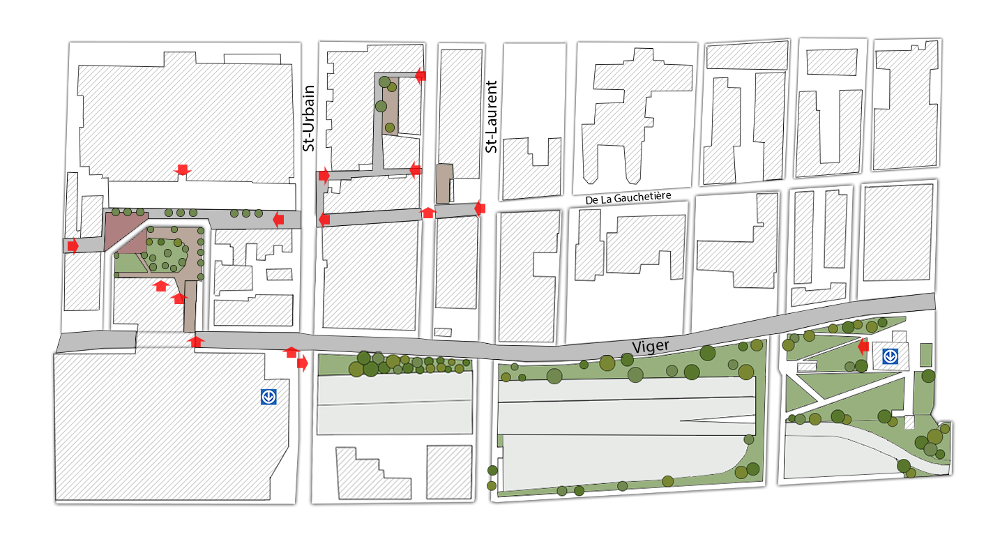

Term Project 464
Francis Grenier
GEOG 464
Concordia University
April 22th, 2022
The Resilient Space Project
The project was completed as part of the Urban Planning course URBS 433 based on the following mandate:
"The Resilient Space Project (RSP) seeks to solidify Chinatown’s unique cultural identity through the unification of the district’s fragmented areas, using strategies to optimize and activate the existing formal and informal public spaces."
The full design proposal can be viewed here:

Resilient Space Project's Proposal
Site Selection
An analysis of public space expansion potential was performed based on the two-fold approach of optimization of underutilized public land and the formalization of informal uses of public and private spaces. Three particular sites of interest were selected and subjected to a design makeover.
Figure 3: Map of Chinatown, illustrating the 3 selected sites for intervention.
Source: Resilient Space Project
The interactive map below locates each site of intervention while additionally providing a brief overview of each design proposal.